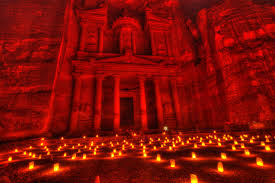

Seven Wonders of the World?
1.The Colosseum
2.Machu Picchu
3.Petra
4.Taj Mahal
5.Cristo Redentor
6.Great Wall of China
7.Chichén Itzá
1.The Colosseum
The Colosseum

It is also the largest amphitheatre in the world according to the Guinness Book of World Records.
It was constructed about 80 CE.
Commissioned during the first century of the Roman Empire by the Flavian emperors....
2.Machu Picchu
Machu Picchu
It was built as an Incan estate for the emperor Pachacuti in the 15th century,
it is approximately 8,000 feet (2,430 metres) above sea level..
3.Petra
Petra

Petra is a famous archaeological site in Jordan's southwestern desert.
Dating to around 300 B.C.,
it was the capital of the Nabatean Kingdom.
Accessed via a narrow canyon called Al Siq,
It contains tombs and temples carved into pink sandstone cliffs,
Earning its nickname,
the "Rose City."
4.Taj Mahal
Taj Mahal

The Taj Mahal is an ivory-white marble mausoleum on the right bank of the river Yamuna in Agra, Uttar Pradesh, India. It was commissioned in 1631 by the ...
Built: 1631–1653
Location: Agra Uttar Prades India
Built for: Mumtaz Mahal
Area: 17 hectares (42 acres)
5.Cristo Redentor
Cristo Redentor
Christ the Protector in Encantado, Rio Grande do Sul,
Brazil (43 m)
Christ the Redeemer in Rio Verde, Goiás, Brazil
Christ in the Mount in Pitangui, Minas Gerais,
Brazil
Cristo del Otero in Palencia,
Spain built in 1930 (21 m)
Sacred Heart of Jesus Monument, in Oviedo,
Spain built in 1980 (30 m)
Cristo Rey located on the Cerro del Cubilete in Guanajuato, Mexico,
inspired by Rio's Christ the Redeemer (23 m)
Cristo Rey in Tenancingo, México, México (30 m)
6.Great Wall of China
Great Wall of China

Great Wall of China, Chinese (Pinyin) Wanli Changcheng or (Wade-Giles romanization) Wan-li Ch’ang-ch’eng (“10,000-Li Long Wall”),
extensive bulwark erected in ancient China, one of the largest building-construction projects ever undertaken.
7.Chichén Itzá
Chichén Itzá

Chichén Itzá was a major focal point in the Northern Maya Lowlands from the Late Classic (c. AD 600–900)
through the Terminal Classic (c. AD 800–900) and into the early portion of the Postclassic period (c. AD 900–1200).
The site exhibits a multitude of architectural styles,